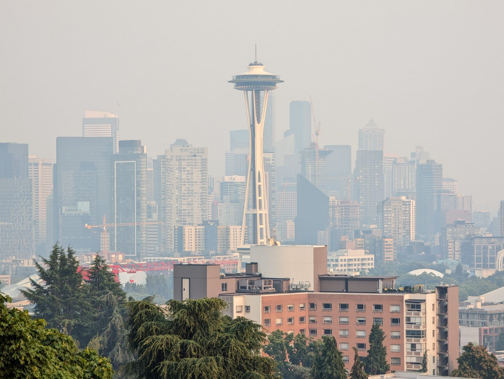
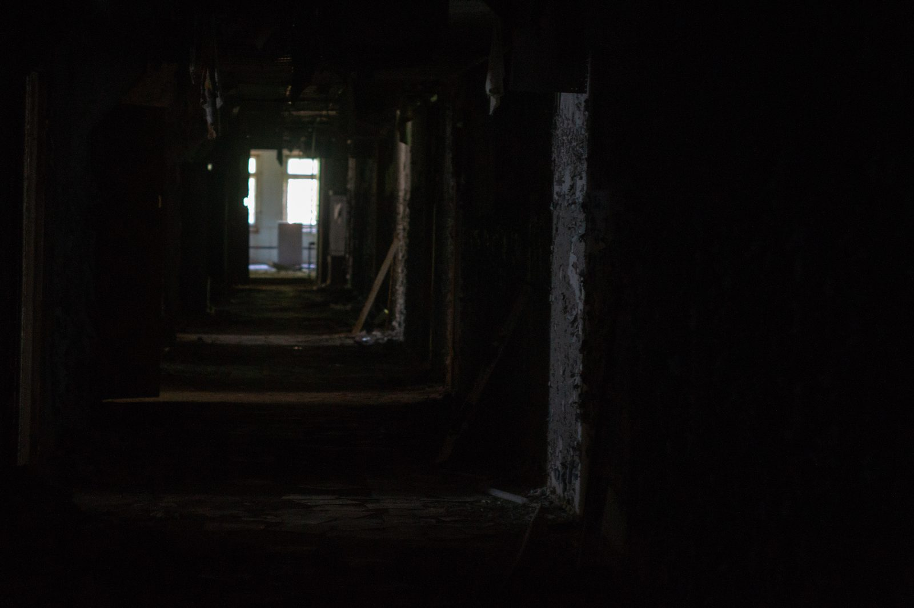
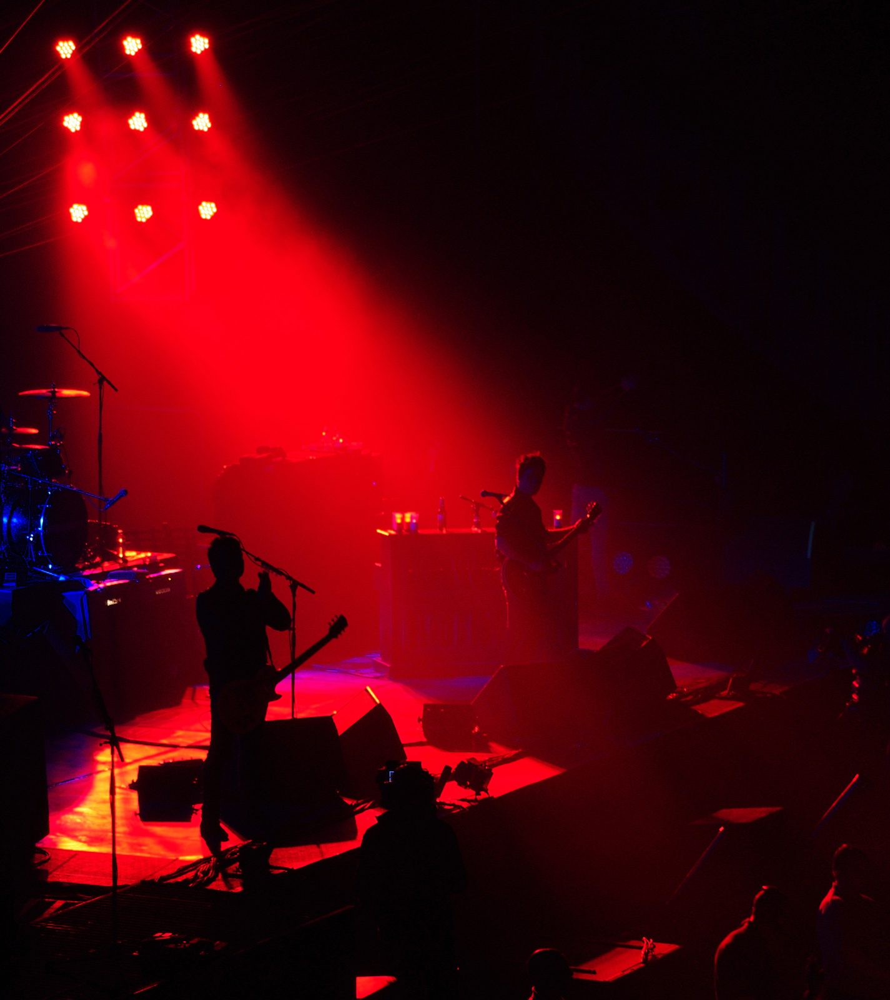

PROJECT: ASHLINE
Playable Prototype
Tactical action / PC + console target.
LIVE BUILD // VERTICAL SLICE CHANNEL
Enter the live build.
Worlds with impact. Systems with teeth.
Fury builds playable combat worlds designed to be mastered, watched, and remembered.
LEVEL SELECT // ACTIVE PROJECTS
Title-card fragments lock to the mission lane: playable proofs, platform targets, and combat readability signals.

Tactical action / PC + console target.

Co-op combat systems with clean tells and brutal timing.

Competitive spectacle with readable crowd-facing chaos.
PRESS-KIT SIGNAL STRIP
Fast assets for reviewers, curators, platform reps, festival programmers, and publishing partners.
Studio: Fury // Genre lanes: Action / Systems / Spectacle // Press response: 24-48hPLAYABLE MANIFESTO // BUILD BIBLE
Staggered build notes pinned to the corridor, each one protecting the player-facing combat fantasy.
Every effect earns its frame. Every enemy tells before it punishes.
VFX, sound, and camera pressure clarify the fight instead of hiding it.
Routes, verbs, and risk states stay legible across the hundredth run.
Clutch moments read instantly from the couch, stream, and tournament desk.
Keep the build playable while the pitch deck is still catching up.
RECRUITMENT QUEST BOARD
Fury hires for craft discipline: people who can protect the build, sharpen the fantasy, and make player-facing systems survive contact with real play.
combat feel, player verbs, encounter loops.
performance budgets, tools, build stability.
readable silhouettes, mood, material language.
enemy tells, tuning, spectacle control.
milestone discipline, playtest cadence.
platform, press, community, partner ops.
PARTNER PUBLISHING ROUTE
Clear builds, clean milestone language, press-ready assets, and player-facing proof before the pitch deck.
FINAL CTA HUB // CHOOSE YOUR EXIT
Follow the next build.
Press / PartnersDownload Press KitOpen the signal kit.
RecruitsView Open QuestsPick a quest.
Fury is building worlds with impact — playable first, cinematic always.